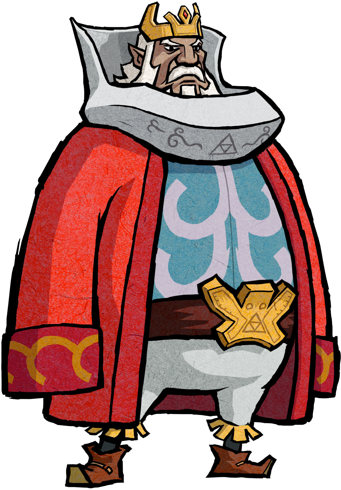

Hyrule est le royaume mythique dans lequel se déroule l'histoire de la plupart des jeux Zelda. Il est gouverné par la famille royale d'Hyrule
dont fait partie la Princesse Zelda, et le roi d'Hyrule. Hyrule change à travers les jeux, et même si l'on retrouve certaines régions
dans plusieurs jeux (comme le Lac Hylia par exemple), leur structure est différente à chaque fois.

Gouvernement
Le premier roi d'Hyrule fut le roi Dartas qui eu une fille nommée qui deviendra par la suite l'héroïne de la saga. Il fait donc parti de la famille royale d'Hyrule. Il arrive cependant que ce ne soit pas toujours un roi qui gouverne le pays, puisque Ganondorf prendra une fois la tête du royaume. On ne connaît pas toujours le roi qui succède au trône.
Devise du royaume
Le rubis est la monnaie la plus courante d'Hyrule. La couleur de ce dernier indique la valeur mais elle peut cependant variée d'un jeu à l'autre. Ils sont utilisés pour acheter des objets tel que des potions, des améliorations ou des outils.
Hyrule est plutôt dans une époque médiéval car la technologie existe peu mais il y a tout de même quelques civilisations plus ou moins avancées comme le Désert de Lanelle, qui est rempli de machines fontionnant à l'électricité.